Context
Thinking as a co-founder first, designer second
As part of the startup incubator LavaLab, my co-founders and I were tasked with identifying a problem space and building a business venture within ten weeks.
One of my co-founder’s parents worked in the cost segregation industry, which gave us direct insight into this problem area.
Outcomes
15+
user interviews
To build a holistic view of the problem
4
signed partners
Including larger firms such as CSSI
#1
Best Traction
LavaLab F25 Industry Pitch Competition
Problem
The broken workflow
Cost segregation is a niche, U.S.-only field tied to the federal tax system. The workforce is aging with very few young professionals entering — and with no international market, the industry has limited room to grow its talent pipeline. Firms are under pressure to do more with less.
For engineers inside these firms, the day-to-day is a compounding set of manual, high-stakes tasks. A single residential study costs around $1,200 and takes 2–3 weeks to complete — mostly due to manual work with no standardized process.


Hurdles in our process
Confidential data
Firms were reluctant to share sensitive property and financial information with new tools
Job displacement fear
Engineers worried AI would replace them — making early conversations difficult
No standardized input
Documents arrive in different formats with no consistent structure
Tool switching
Engineers cross-reference photos, appraisals, sketches and notes across 4+ tools
Legal liability
Every classification must be IRS-defensible — licensed sign-off is legally required
Workflow overview
01
Client Onboarding
Receive property info & sign engagement
02
Document Collection
Gather blueprints, appraisals, invoices
⚠ No standardized format for docs
03
Site Visit & Photo Capture
Photographer captures every room & asset
⚠ Photos unstructured, often mislabeled
04
Photo Organization
Manually sort, label & match to assets
⚠ Entire job role exists just for this
05
Document Cross-Reference
Validate each asset across 4+ tools
⚠ Tool-switching kills focus & time
⚠ High ambiguity + legal liability
07
Quality Review
Senior engineer checks for IRS defensibility
⚠ Blind review — no source links
08
Report Generation
Manually compile client deliverable
⚠ Fully manual, no structured output
09
Sign-off & Delivery
Licensed professional signs & delivers
⚠ AI legally cannot do this
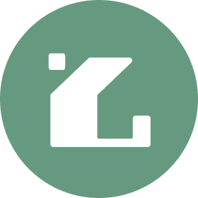
Asset classification in detail
01
Pull up asset individually
02
View photos, floor plan, docs
⚠ 4+ tools open at once
03
Determine dep. category
⚠ Ambiguous IRS guidelines
04
Find source document
⚠ Docs scattered, hard to trace
05
Flag ambiguous assets
⚠ No system to track flags
06
Record & document
⚠ 100% manual, no structure
Design Question
How might we reduce the manual burden of cost segregation analysis without removing the professional judgment that makes it legally defensible?
Research
None of us had a background in cost segregation. Before designing anything, we interviewed almost every person in the workflow: retired specialists, practicing engineers, photo organizers, sales leaders, podcast hosts, and CEOs of firms both small and large.
Finding 01
Data
When we showed our first prototype to a retired cost segregation specialist, the response was immediate: the workflow has too many judgment calls for AI to handle alone. A license is required to sign off on every study. AI cannot do that.
Insight
The core problem wasn’t speed - it was confidence. Every AI output needs to be traceable back to source documentation and legally defensible.
Consequence
Reframed the entire product around traceability. Rethought the full information architecture from scratch. V1 was immediately invalidated.
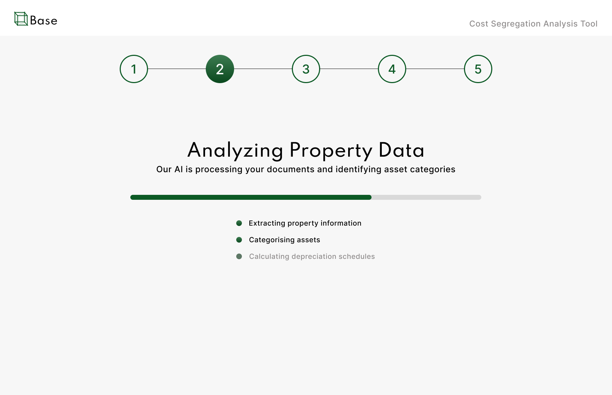
V1 prototype - our first assumption was that AI could handle everything. It was immediately invalidated.
Finding 02
Data
We discovered that some people’s entire job is manually sorting, labeling, and matching property photos to asset categories - a task so time-consuming it warranted its own dedicated role.
Insight
The biggest bottleneck wasn’t analysis - it was evidence organization. Engineers were drowning in unstructured photos before they could even begin classifying.
Consequence
Designed a unified document view so engineers could view, annotate, and reference photos without ever leaving the interface.
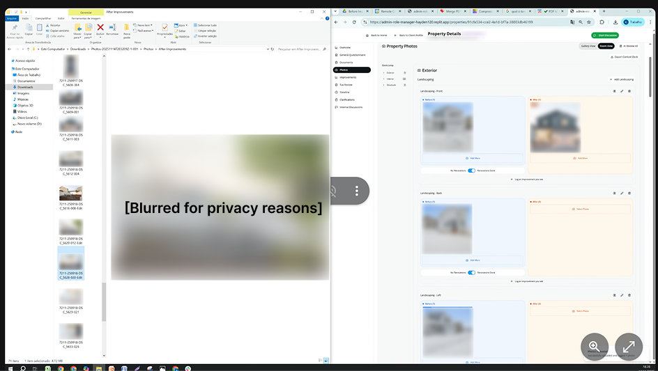
The manual photo organization reality - hundreds of raw files, no structure, no standardized naming.
Finding 03
Data
Engineers and firm owners were hesitant to engage with us at all. Two reasons came up repeatedly: cost segregation involves highly confidential property and financial data, and many engineers feared our product would replace their jobs entirely.
Insight
The product needed to visibly keep engineers in control - not just technically, but perceptually. Trust had to be designed in, not assumed.
Consequence
Built human-in-the-loop checkpoints at every major stage. Made override and approval actions prominent so engineers always felt like the final authority.
Engineers needed to see that Basis made them better at their job - not redundant.
Competitive Landscape
Studying existing tools helped define what Basis needed to be.
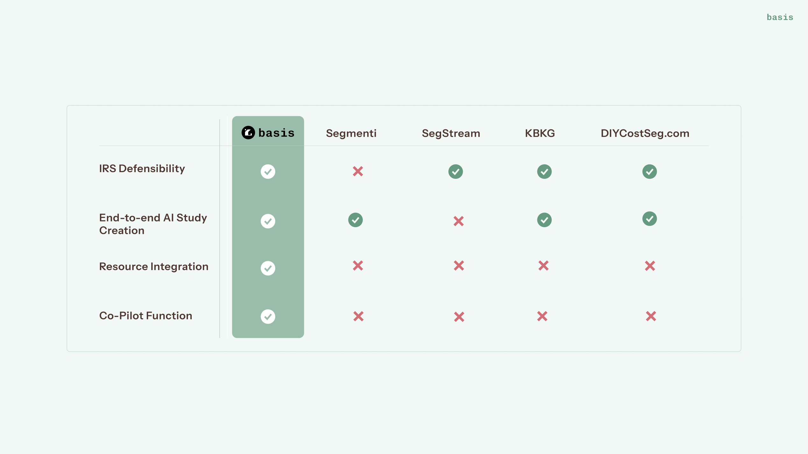
SegStream
Built for seasoned specialists, powerful but dense. The worksheet interface surfaces granular classification data with identifying details for each component, which engineers actually need. But the navigation is overwhelming and there is no AI assistance anywhere in the workflow.
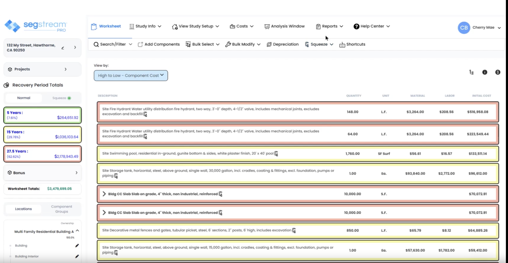
Segmenti AI
Gets the upload and document viewing experience right, clean, accessible, easy to pull up files throughout the process. But it is fully AI-automated with no human review built in. Still in beta, it carries openly low confidence scores on its outputs, a dealbreaker in an industry where every classification needs a licensed sign-off.
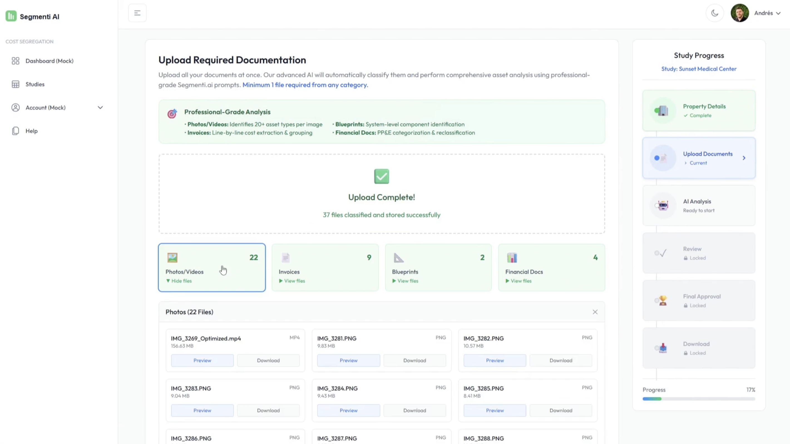
What we took from each
Human-in-the-loop
Borrowed from what Segmenti gets wrong
Clean navigation
The antidote to SegStream’s density
Key details per classification
The one thing SegStream gets right
Easy doc viewing throughout
The one thing Segmenti gets right
Brand Direction
Six weeks in, we scrapped the brand. It looked like a startup. It needed to look like a tool.
Color
Most competitors defaulted to blue. We went green deliberately, green signals money, growth, and financial precision. The warm browns and dusty rose accents add a wallet-and-wealth association, grounded in what the industry actually does. The palette stays muted for extended screen time, engineers spend hours in this tool.
Logo
The rounded square motif used throughout the UI, in cards, tags, and inputs, is carried directly into the logo mark. The shape also echoes a document, a form, a data field, the exact artifacts engineers work with every day.
Design system
We added tags throughout the design system to make components skimmable at a glance, so the team could move fast without hunting for the right element.

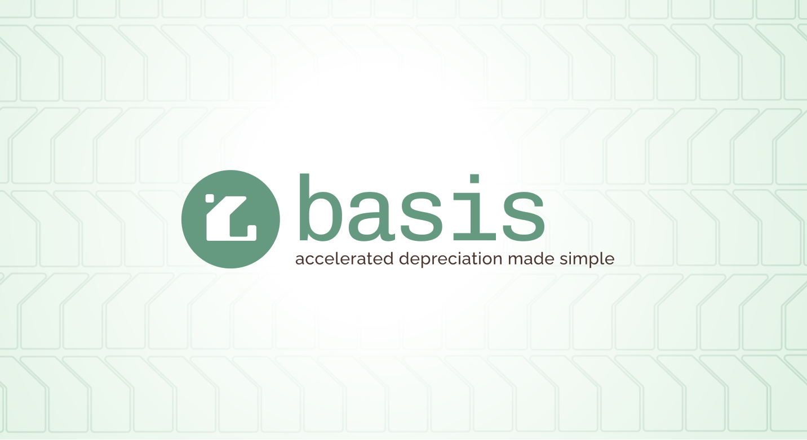
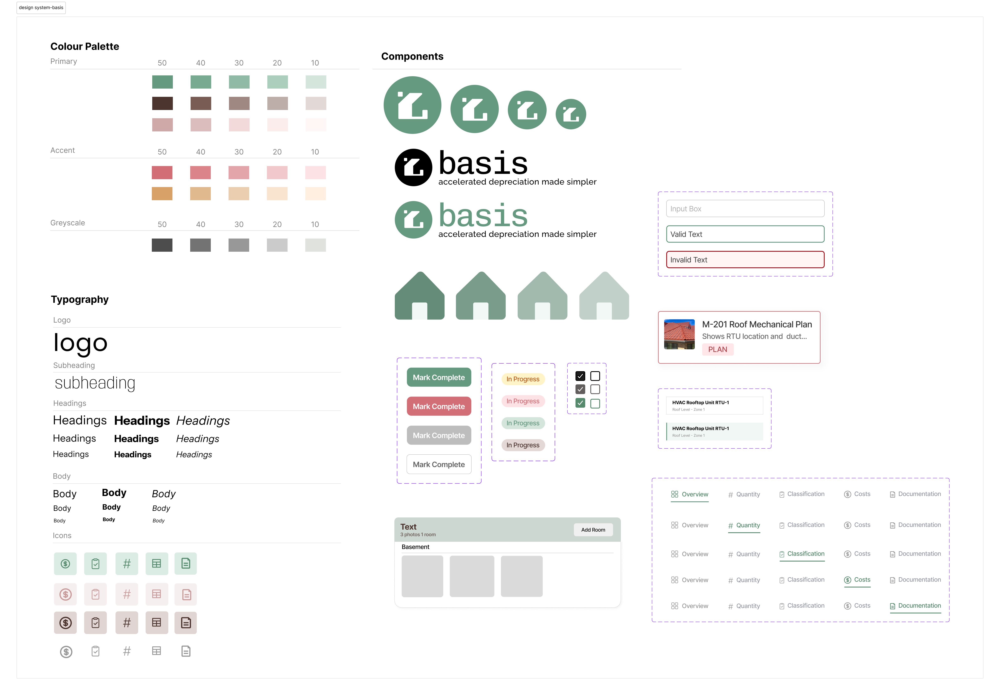
Working with Engineering
Design at Basis wasn’t done in Figma and handed off. Each version was built, tested with real engineers, and broken in ways we didn’t expect. Here’s what changed and why.
Feature 01 — Image Organisation
From a flat file list to an annotatable image workspace
Initially engineers uploaded documents as a flat list with no visual structure. Further interviews revealed images needed to be organized by room and annotatable directly — so engineers could identify and tag assets without switching tools.
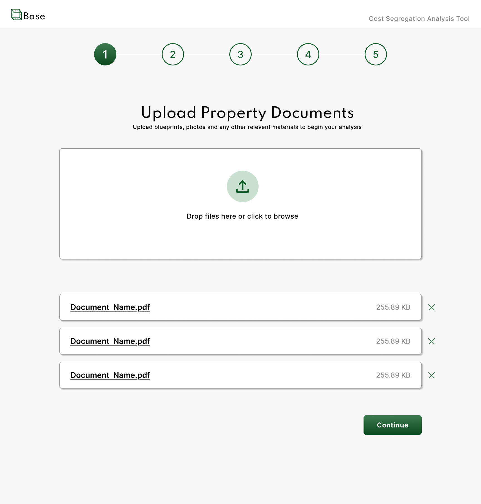
Documents uploaded as a flat list. No visual structure, no way to distinguish photos from appraisals.
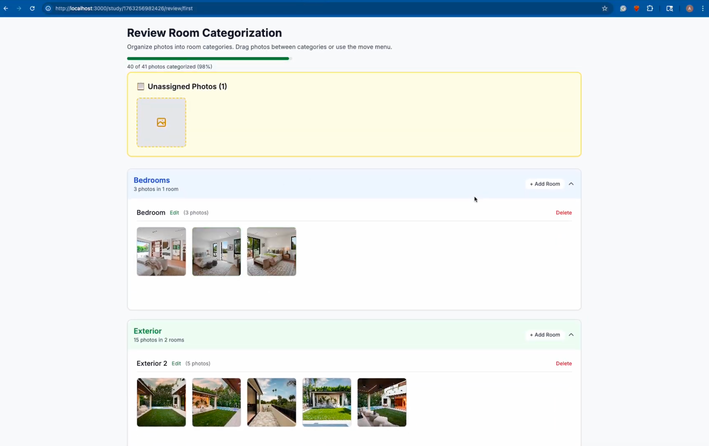
After interviews, reorganised into room-based categories. Engineers could drag photos between rooms and track unassigned files.
Click any image to annotate inline. AI identifies objects with confidence scores. Engineers review, edit, and mark as done without leaving the page.
Feature 02 — Asset Verification
From one asset at a time to a full verification workspace
The original verification page showed one asset at a time with no supporting documentation visible. Engineers had to scroll, switch tabs, and cross-reference externally. We rethought the layout fundamentally to bring everything into one view.
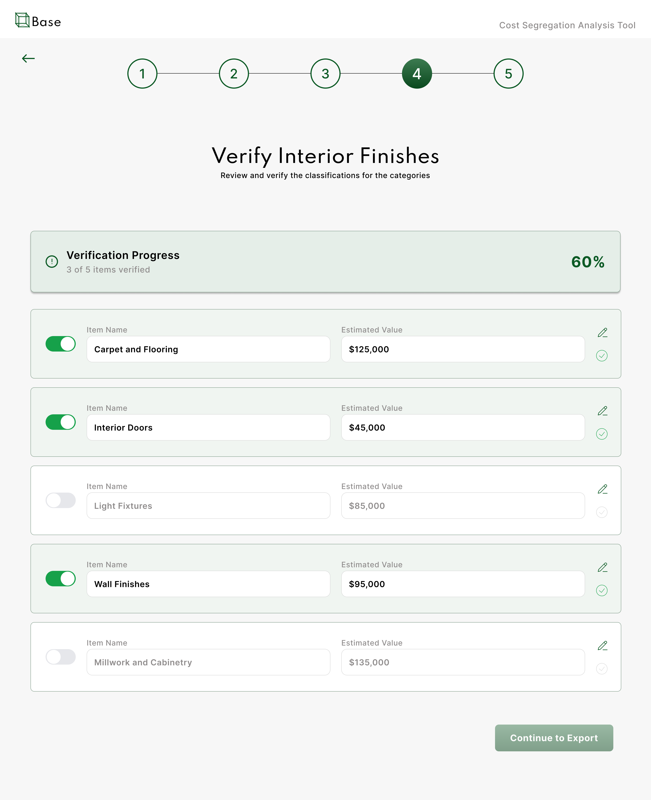
One asset shown at a time. Name and estimated value only. No images, no source documents, no IRS reference visible.
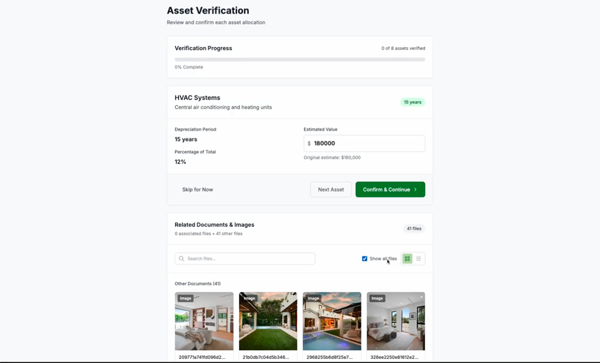
Added related documents and images below the asset form. Better, but still required heavy scrolling to cross-reference.
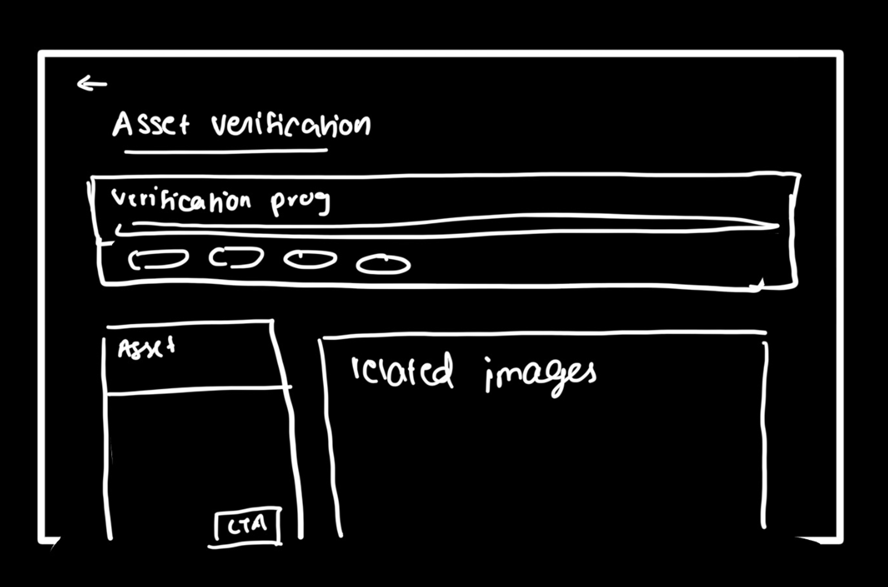
Realised the layout itself was the problem. Sketched a side-by-side structure on the spot — asset details left, related images right.
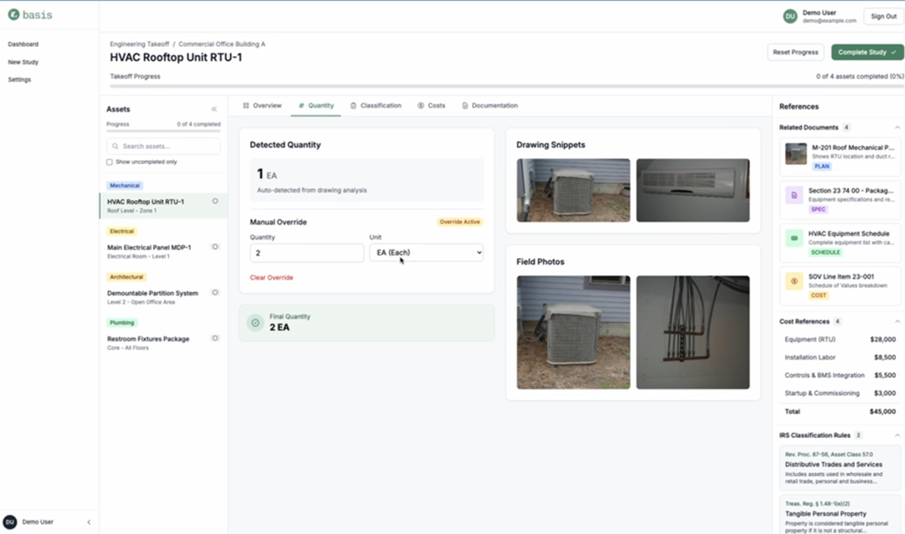
Final layout: asset classification and verification on the left, drawing snippets and field photos on the right. IRS Classification Rules and cost references surfaced inline. Manual override always visible. Everything an engineer needs to make a defensible decision, in one view.
Solution
Presenting: Basis
We reduced manual work behind cost segregation by using AI to analyze property documents and generate structured asset classifications.
Our product is built for cost segregation engineers in small to medium firms targeting residential studies. With a shrinking talent pipeline in the industry, new AI capabilities create an opportunity to automate their most time-intensive tasks.
Ability to edit and verify work done by our model.
Human-in-the-loop workflows
Because cost segregation relies on professional judgment, Basis was designed with review, override, and approval checkpoints.
Cross-referencing classifications with IRS guidelines and documentation.
Cross-referencing in one place
Engineers previously switched between photos, appraisals, sketches, and notes to validate a single decision. Basis brings these documents into one interface.
Categorizing images and documentation into separate rooms/categories.
Automating redundant tasks
Basis automates repetitive tasks like extracting information, classifying rooms and organizing evidence so engineers can focus on higher-value judgment calls.
Impact
Shipping my first product as a founding designer
In just six weeks, we launched the first version of Basis and validated demand for AI-assisted cost segregation tools. Early traction and industry feedback led to Best Traction at LavaLab’s Fall 2025 Industry Pitch Competition.
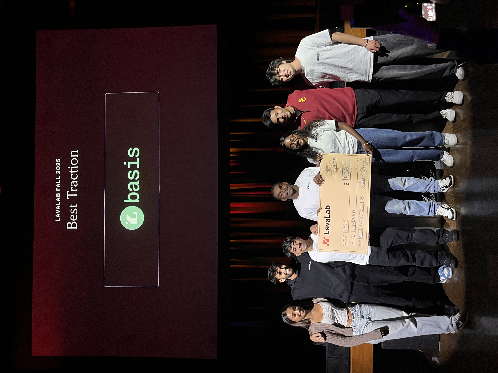
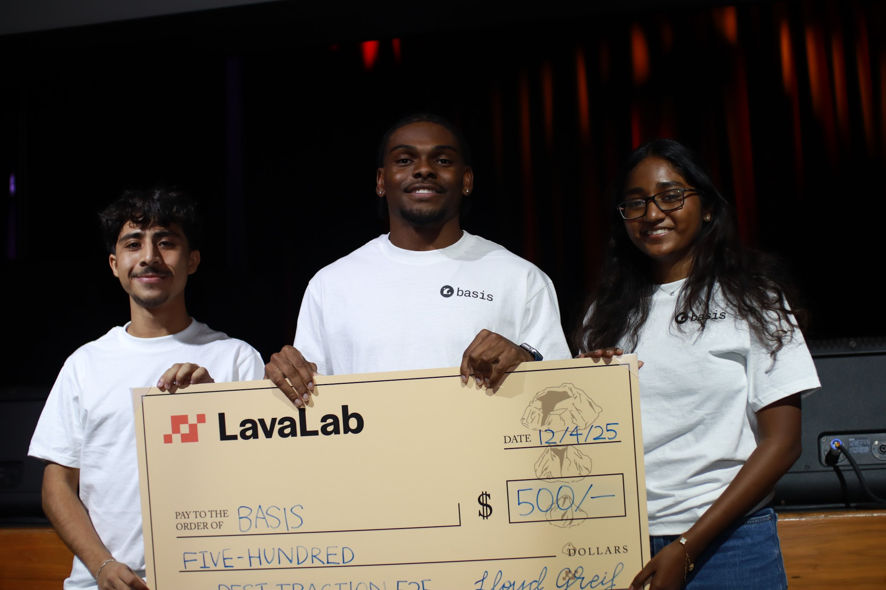
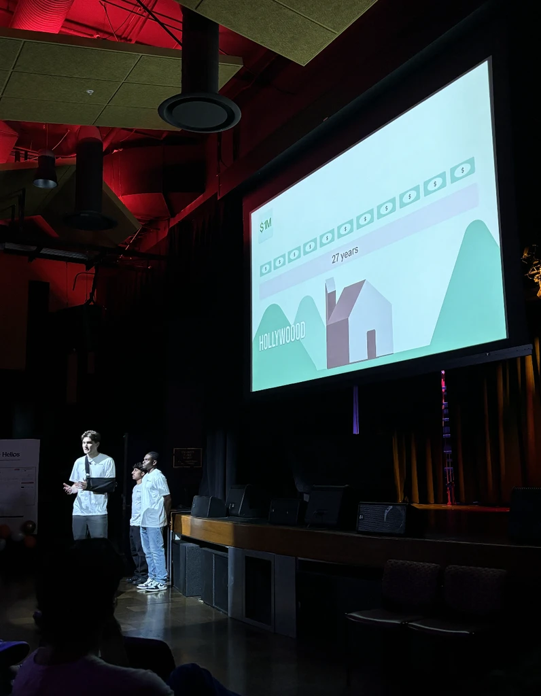
Pitch deck
Key takeaways
Design around a moment of need
The most meaningful impact came from focusing on the exact moment engineers lose confidence- when analysis outputs need to be validated and defended. Designing around that moment clarified what actually mattered and what didn’t.
Ship fast and iterate faster
We went through four meaningful versions of Basis in six weeks — not because we planned to, but because each round of testing with real users broke an assumption we’d built the previous version around. V1 assumed AI could do everything. It couldn’t. V2 added human checkpoints but still leaned too hard on automation. V3 brought documents and AI output into the same view. Each version wasn’t a failure — it was the research. The jump from V1 to final wasn’t a leap, it was a series of small, forced corrections. That’s what fast iteration actually looks like.
The details you overlook are the ones that matter most
I spent two weeks on branding alone and still almost got it wrong. Typography shapes a product’s credibility more than I expected — a font choice that feels neutral in isolation can make a B2B tool look untrustworthy to the exact people you’re trying to sell to. I also learned that opacity does more quiet work than adding new colors ever could, and that Figma’s auto layout is a high-fidelity tool — forcing it into lo-fi exploration doesn’t make your wireframes better, it just slows you down and adds constraints before you’re ready for them.
More case studies